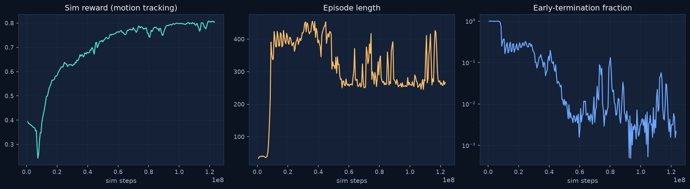
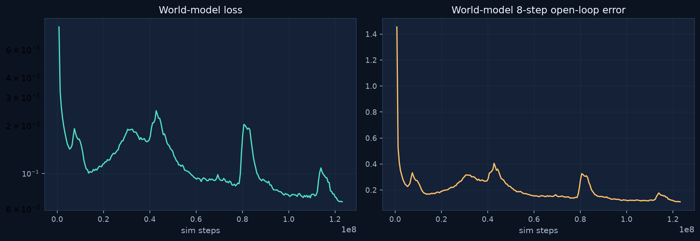
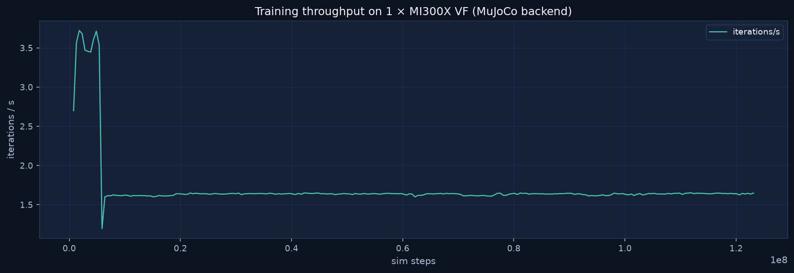
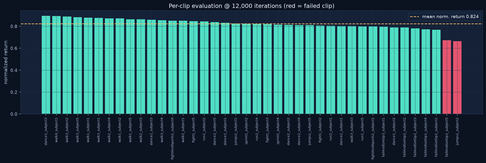

dance1_subject1
norm. return 0.832 · completed归一化回报 0.832 · 完整完成
Uni-SuperMimic is a reproduction of SuperMimic (UC Berkeley, CoRL 2026): a learned 3×2048 world model supplies 32-step analytic-MDP imagination rollouts, and the policy is trained with gradients backpropagated through the model (BPTT). We trained the full pipeline on a single MI300X VF with bf16 autocast and torch.compile enabled: 12,000 iterations and 123.1M simulation steps in 2.0 hours of wall-clock, followed by a full 40-clip evaluation — mean normalized return 0.824, with 38 of 40 clips completed and both failure clips openly reported with video evidence.Uni-SuperMimic 是对 SuperMimic（UC Berkeley，CoRL 2026）的复现：学习得到的 3×2048 世界模型提供 32 步解析 MDP 想象滚动，策略以穿过模型的反传梯度（BPTT）训练。我们在单张 MI300X VF 上以 bf16 自动混合精度 + torch.compile 跑通完整流程：12,000 次迭代、1.231 亿仿真步、墙钟 2.0 小时；随后完成 40 段动作全量评测——平均归一化回报 0.824，38/40 段完整完成，两段失败片段公开列出并附视频证据。
torch.compile + bf16 verified on ROCmtorch.compile + bf16 在 ROCm 上验证通过 Full 40-clip evaluation, failures disclosed40 段全量评测，失败片段如实公开 ROCm environment via pyproject.rocm.tomlROCm 环境由 pyproject.rocm.toml 固化After a 500-iteration world-model-only warm-up, policy learning switches on and the tracking reward climbs from 0.39 to 0.81 while the early-termination fraction drops from 99.4% to 0.2% (log scale). Imagination survival stays above 0.999, so virtually every imagined rollout reaches its full 32-step horizon — the world model stays accurate enough to trust for analytic gradients throughout training.世界模型单独预热 500 次迭代后开启策略学习：跟踪奖励从 0.39 升至 0.81，提前终止比例从 99.4% 降至 0.2%（对数坐标）。想象存活率全程高于 0.999，即几乎每条想象滚动都完整走完 32 步——世界模型在整个训练过程中始终保持足以支撑解析梯度的精度。

| Config配置 | Value取值 |
|---|---|
| World model世界模型 | 3×2048 MLP · latent z_dim 32 · window 8 · 10 batches × 2,048 |
| Policy / critic策略 / critic | 2048-1024-512-256 / 256-128 MLP |
| Imagination想象滚动 | horizon 32 · BPTT through model · TD(λ=0.95) backup32 步 · 梯度穿模型 BPTT · TD(λ=0.95) 兜底 |
| Optimization优化 | lr 2e-4 · γ 0.99 · UTD 0.4 · bf16 AMP · torch.compile · seed 0 |
| Schedule日程 | 12,000 iterations · world-model-only first 50012,000 次迭代 · 前 500 次仅训世界模型 |
World-model loss falls from 0.83 to 0.066 (log scale) and the 8-step open-loop prediction error from 1.45 to 0.11 — the model is accurate enough that 32-step imagination rollouts can replace real environment steps for policy gradients, which is what makes the 2-hour wall-clock possible on a single GPU.世界模型损失从 0.83 降至 0.066（对数坐标），8 步开环预测误差从 1.45 降至 0.11——模型精度足以让 32 步想象滚动替代真实环境步来提供策略梯度，这正是单卡 2 小时完成训练的关键。


Run identity: supermimic_mujoco_001 · 2026-10-24 · MuJoCo backend · 1.64 iterations/s sustained. All curves exported from the run's TensorBoard event file and train_log.csv.运行标识：supermimic_mujoco_001 · 2026-10-24 · MuJoCo 后端 · 持续 1.64 次迭代/秒。曲线全部导出自该次训练的 TensorBoard 事件文件与 train_log.csv。
The 12,000-iteration checkpoint was evaluated on the full 40-clip motion set (dance / walk / run / sprint / jump / fight / fall-and-get-up). Mean normalized return is 0.824 (framewise 0.826). Two clips did not complete — fallAndGetUp1_subject5 (0.673) and jumps1_subject2 (0.663) — both shown in red below, and the fallAndGetUp1_subject5 failure rollout is published as video for inspection.12,000 次迭代的检查点在完整 40 段动作集（舞蹈 / 行走 / 跑动 / 冲刺 / 跳跃 / 格斗 / 跌倒起身）上完成评测。平均归一化回报 0.824（逐帧口径 0.826）。两段未完整完成——fallAndGetUp1_subject5（0.673）与 jumps1_subject2（0.663）——下图中以红色标出，fallAndGetUp1_subject5 的失败回放也公开为视频供检查。

Fifteen rollout videos rendered in MuJoCo from the evaluated checkpoint, covering six motion categories. The final entry is the disclosed failure case. Each card shows the clip's normalized return from the full evaluation.十五段由受评检查点在 MuJoCo 中渲染的策略回放视频，覆盖六类动作。最后一段为公开的失败案例。每个卡片标注该段在全量评测中的归一化回报。
norm. return 0.832 · completed归一化回报 0.832 · 完整完成
norm. return 0.803 · completed归一化回报 0.803 · 完整完成
norm. return 0.879 · completed归一化回报 0.879 · 完整完成
norm. return 0.876 · completed归一化回报 0.876 · 完整完成
norm. return 0.846 · completed归一化回报 0.846 · 完整完成
norm. return 0.801 · completed归一化回报 0.801 · 完整完成
norm. return 0.804 · completed归一化回报 0.804 · 完整完成
norm. return 0.824 · completed归一化回报 0.824 · 完整完成
norm. return 0.826 · completed归一化回报 0.826 · 完整完成
norm. return 0.806 · completed归一化回报 0.806 · 完整完成
norm. return 0.801 · completed归一化回报 0.801 · 完整完成
norm. return 0.769 · completed归一化回报 0.769 · 完整完成
norm. return 0.790 · completed归一化回报 0.790 · 完整完成
norm. return 0.796 · completed归一化回报 0.796 · 完整完成
norm. return 0.673 · did not complete — disclosed for transparency归一化回报 0.673 · 未完整完成——为透明起见公开